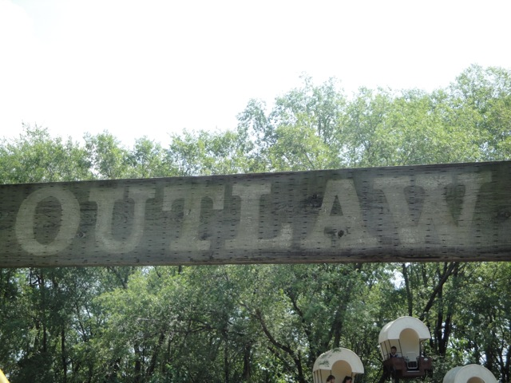

| |
Outlaw Review

We're here at Adventureland. Today, we're here to review the Outlaw. Now while this ride is one of the earlier Custom Coasters coasters, it also was worked on by a guy named Mike Boodly, who would later found Great Coasters International. So in a way, one could consider Outlaw to be the first GCI ever, and it shows with it's fun and twisty layout. Anyways, after getting in the seats, you pull down the buzz bars, and you're off (Did I mention that this park is awesome). Well, it first starts off with like a wacky worm section. It's just a few tiny little bumps. It's not much, but hey, at least they aren't trying to kill you like on a certain former coaster. You then climb up the lifthill. From there, you get a really good view of Tornado. However, before you know it, you're hurdling down the first drop! Not only do you pick up a lot of speed on the first drop, but you also get some good laterals from the twistiness. You then rise up a small hill that provides us with a nice pop of airtime before heading into a sharp turn that slams you into the side of your seat. Then after that, you dip back down and get probably the best moment of ejector air in the park, which is actually pretty good. If you're not expecting it like I wasn't, you'll shout something like "OH SH*T!!!!" with delight. We then pop up into another hill, to be led into another turn, giving us a nice airtime/laterals combo. That of course, leads to another fun drop with a nice pop. This leads to a sort of swooping upward helix before turning and heading back around. The whole way is a nice sandwich of laterals. More laterals are just around the corner as the ride heads into a turnaround that seems to never end and just takes you right underneath the structure of the Outlaw. We then take a quick breather with some straight track before turning to the left. Get some nice laterals over here. Turn to the right to get some nice laterals over there. And then we hit the brake run. Outlaw is a really fun wooden coaster. It may be small, but it's got a lot of great twists and some nice pops of airtime. This is without a doubt, the star attraction at Adventureland and a hidden gem among the United States. So yes, I would recommend you ride it.
7/10
Location: Adventureland
Opened: 1993
Built by: Custom Coasters International
Last Ridden: August 6, 2010
Outlaw Photos



Home
|